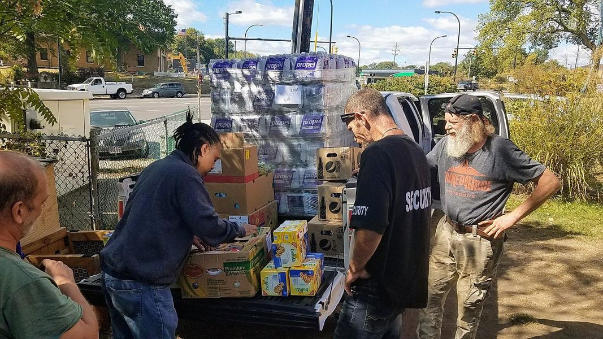

Timeline photos
This was taken on my birthday, September 28, 2017.
This was at the height of our homeless day center and tent city in Akron Ohio.
We, very intentionally, built a self-run organization. By homeless people, for homeless people.
I’m not sure who the person is on the far left. I can’t make out his face.
But the Black man standing at the tailgate of my truck is Tony. He ran our kitchen.
The man in the security shirt is Ronnie. He was the head of our security team at that time.
And then the man on the right is Steve. He is the best scrapper I’ve ever met.
We could take a person who had nothing except clothes on his back today and turn him into a village greeter tomorrow. Literally, we could give people value and meaning in their life overnight.
Akron will look back on this community as being ahead of it’s time. The way they treated us will not age well in the history books.
The fire department shut down our day center. And the zoning department shutdown our tent city.
That was the grand conclusion the city of Akron came away with from our little self-run, self-funded experiment. “NO!”